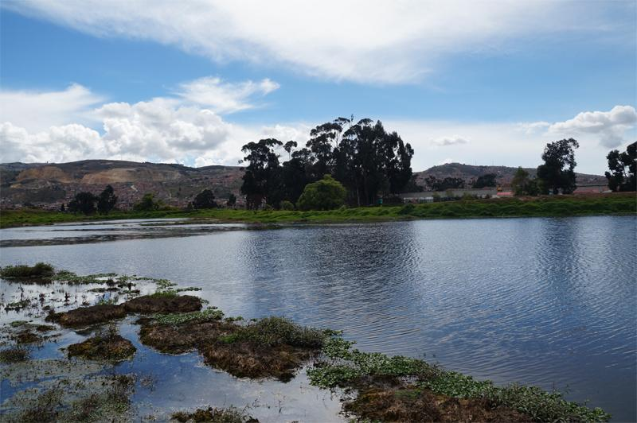

Apoyo a Mipymes y emprendimientos con enfoque turístico
El programa Apoyo a Mipymes y Emprendimientos con Enfoque Turístico es una iniciativa de la Alcaldía Local de Tunjuelito que busca fortalecer las capacidades de gestión y operación de emprendimientos que puedan convertirse en atractivos turísticos o que estén vinculados a la promoción de la identidad local. Esto incluye productos típicos, recorridos históricos, experiencias gastronómicas o culturales.
Objetivo del Programa
Fortalecer las capacidades de gestión y operación de emprendimientos que puedan convertirse en atractivos turísticos o que estén vinculados a la promoción de la identidad local. Esto incluye productos típicos, recorridos históricos, experiencias gastronómicas o culturales.
Requisitos para Participar
Para acceder a los beneficios del programa, los emprendimientos deben cumplir con los siguientes requisitos: Bogotá.gov
- Ser productor u ofrecer algún servicio en Bogotá.
- Estar en operación actualmente.
- Contar con Registro Único Tributario (RUT) con actividad económica relacionada o registro mercantil.
- Para emprendimientos gastronómicos, es necesario contar con el certificado de manipulación de alimentos.
Proceso de Postulación
El proceso de postulación consta de tres pasos:
- Diligencia el formulario: Se evaluará el estado del emprendimiento y su nivel de madurez.
- Curaduría presencial: Los postulantes presentarán su producto y discurso de venta.
- Asignación de espacios: Según la evaluación, se asignará una feria, vitrina presencial o digital para la comercialización del negocio.
Vigencia y Plazos
La convocatoria estará abierta hasta el 16 de febrero, por lo que se solicita a todos los emprendimientos y mipymes realizar los trámites para la adquisición de documentos con tiempo.
Documentación Requerida
Para inscribirse en el proyecto, se debe llenar el formulario y adjuntar los siguientes documentos
- Fotocopia del documento de identidad.
- Certificado de residencia y/o pertenencia.
- Fotocopia del recibo de servicio público donde opera el emprendimiento (no aplica para vendedores informales).
- Cámara de Comercio (si aplica).
- Carta de intención.
- Registro fotográfico de la unidad productiva con cuatro fotos que muestren el funcionamiento de la unidad y la nomenclatura donde funciona.
- Constancia firmada de que no se encuentra inscrito en otros proyectos del Fondo de Desarrollo Local de Tunjuelito.
- Referencia comercial de un proveedor donde se especifique desde qué fecha se tiene relación comercial con el emprendedor y/o mipyme y el monto promedio de compra.
- RIVI para vendedores informales (si aplica).
- Certificado SIMIT no mayor a 30 días donde indique que se encuentra a paz y salvo por multas e infracciones de tránsito.